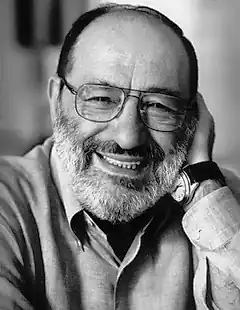
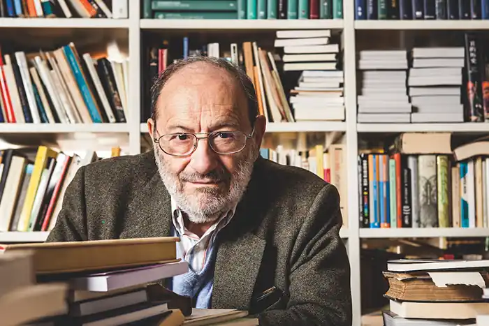
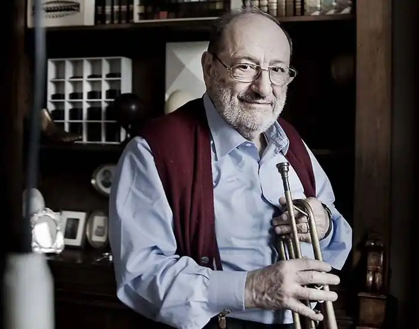

УМБЕРТО ЕКО
(народився 1932)
Італійський прозаїк, семіотик, культуролог, есеїст, відомий італійський теоретик, професор семіотики Болонського університету, доктор філософських наук, культуролог, журналіст, автор всесвітньовідомих романів "Ім'я троянди" (1980), "Маятник Фуко" (1988), "Острів попереднього дня" (1995), "Бавдоліно" (2000), лауреат численних літературних премій (Strega, Viareg-gio, Anghiari), кавалер французького ордена за заслуги в літературі, ордена Маршалла Мак Люена (ЮНЕСКО), ордена Почесного легіону, грецького ордена Золотої зірки, ордена Великого Хреста Італійської республіки, член Міжнародного форуму ЮНЕСКО (1992-1993), президент Міжнародної асоціації семіотики і когнітивних досліджень, академік Академії світової культури в Парижі, Академії наук Болоньї, Міжнародної академії філософії мистецтв, почесний професор понад 30 університетів Європи, Азії та Америки, Умберто Еко народився 5 січня 1932 року в Алессандрії (П'ємонт), невеликому містечку на схід від Туріна й на південь від Мілана. Батько Джуліо Еко, бухгалтер за професією, ветеран трьох воєн, мати — Джованна Еко. Виконуючи бажання батька, котрий хотів, щоб син став адвокатом, Еко вступив до Турінського університету, де слухав курс з юриспруденції, але незабаром залишив цю науку й зайнявся вивченням середньовічної філософії. Закінчивуніверситету 1954 році, представивши як дисертаційну роботу твір, присвячений релігійному мислителю та філософу Фомі Аквінському. У цьому ж році улаштувався на роботу на RAI (Італійське телебачення), де був редактором програм з культури, друкувався в періодиці. У 1958— 1959 роках служив в армії. Цей плідний літератор пише як італійською, так і англійською мовами. Додаючи декілька фактів для повного уявлення про цю непересічну особистість, можна пригадати цікаві розповіді Умберто Еко про самого себе. З них постає дещо ексцентрична людина, яка, щоб довести, що вона не забобонна, зумисне бігає назустріч чорним котам чи призначає іспити на 13-е, щоб покепкувати з переляканих студентів. Кожну свою книжку письменник закінчував до свого дня народження (він народився 5 січня 1932 року), а якщо не встигав цього зробити, то зумисне "відтягував" до наступного року. Роман "Бавдоліно" У. Еко, захопившись, завершив у серпні, і, волею долі, в цей день народився його перший онук, якому автор і присвятив цю книжку. При перекладах, котрі він обов'язково курирує, Еко робить численні виправлення, створює різні варіанти, так що, у кінцевому підсумку, один текст сильно відрізняється від іншого. Численні видання, що вийшли в усьому світі (твори Еко перекладались європейськими та східними мовами), вказували на гіперактивну роботу автора. Еко бере участь у різноманітних проектах: інтернетівських форумах, публічних лекціях, створенні CD, присвяченого культурі бароко, та ін., але за свою довгу кар'єру вченого і літератора він лише два рази виступав на телебаченні, виключивши цю форму комунікації зі свого життя. Можливо, зіграло роль те, що стосунки Еко з телебаченням склалися не надто вдало — у 1959 році він був звільнений з RAI. 1959 року Еко стає старшим редактором розділу "література нон фікшн" міланського видавництва "Бомпьяні" (де працював до 1975року) і починає співпрацювати з журналом "Verri", виступаючи з щомісячною колонкою. Статті, надруковані у "Verri", склали добірку "Diario minimo" (1963), озаглавлену відповідно до рубрики, яку вів Еко, а майже через три десятиліття вийшла у світ друга добірка "Diario minimo" (1992). Згодом починається і надзвичайно інтенсивна викладацька академічна діяльність Еко. Він читає лекції з естетики на факультеті літератури та філософії Турінського університету й на архітектурному факультеті Міланського політехнічного інституту в 1961 —1964 роках, у різний час був професором візуальних комунікацій архітектурного факультету Флорентійського університету, професором семіотики Міланського політехнічного інституту, Болонського університету до 1975 року, завідувачем кафедри семіотики Болонського університету, директором програм одержання вченого ступеня з семіотики Болонского університету (1986-2002), членом Виконавчого наукового комітету університету Сан-Маріно (1989-1995), президентом Міжнародного центру семіотичних і когнітивних досліджень, професором Коллежу де Франс у Парижі (1992-1993), читав цикл Нортоновських лекцій у Гарвардському університеті, був обраний президентом Вищої школи гуманітарних досліджень Болонського університету, Італійського інституту гуманітарних наук. Крім того, читав курси лекцій у Нью-Йоркському, Йєльскому, Колумбійському університетах, в університеті Сан-Дієго. Крім семінарів і лекцій, прочитаних в італійських університетах і різних установах, виступав з лекціями і вів семінари в різних університетах всього світу, а також у таких культурних центрах, як Бібліотека конгресу США і Спілка письменників СРСР. Такі напружені академічні заняття, як не дивно, не заважали науковій праці. Популярність до Еко-семіотика прийшла після публікації книги "Opera aperta" (1962), де, він розмірковує про загальні проблеми культури. Наступні книги, що згодом вийшли, свідчать, яким широким було коло наукових інтересів автора та якими глибокими були його пізнання в найрізноманітніших областях науки і культури. Серед них: "Залякані і з'єднані" (1964), твір, де розглядаються питання теорії масової комунікації, "Поетика Джойса" (1965), "Знак" (1971), "Домашній побут" (1973), дослідження, присвячене проблемам історії культури, "Трактат з загальної семіотики" (1975), "На периферії імперії" (1977), твір, також присвячений проблемам історії культури, "Інтерпретація і гіперінтерпретація" (1992), "Пошуки ідеальної мови в європейській культурі" (1993), "Відкладений Апокаліпсис" (1994), збірник, що об'єднав обрані есе "П'ять есе з етики" (1997), "Кант і качконіс" (1997), дослідження, присвячене питанням епістемології, "Між неправдою та іронією" (1998), де автор аналізує феномен неправди в різного роду практиках, "Про літературу" (2002), збірник, куди ввійшли перероблені в статті публічні виступи Еко й власне статті. У своїх наукових працях Еко розглядав як спеціальні, так і особисті проблеми семіотики. В наукових працях, які часто написані з гумором, виявляється незвичайний характер Умберто Еко і тому їх завжди приємно читати. Звісно, крім гумору, теоретик захоплює своєю ерудицією, спонукає до власних пошуків та роздумів, і його дослідження, як правило, є науковою "провокацією" в найкращому розумінні цього слова (зокрема, в працях "Відсутня структура", "Відкритий твір", "Межі інтерпретації", "Lector in fabula" "Інтерпретації розповідних текстів"). Багато зробив учений для осмислення таких явищ, як постмодернізм і масова культура. Постмодернізм, згідно з Еко, не стільки явище, що має строго фіксовані хронологічні рамки, а, скоріше, певний духовний стан, особливого роду гра, участь у якій можлива й у тому випадку, якщо учасник не сприймає постмодер-ністської іронії, інтерпретуючи запропонований текст особливо серйозно. Для масової культури характерні визначені схеми, на противагу модерністській практиці, що робить установку на новаторство й новизну. На думку Еко, висока й масова естетика в постмодернізмі зближуються. Наукові заслуги Еко пов'язані з питанням семіотики. Однак всесвітня слава прийшла не до Еко-вченого, а до Еко-прозїка. Перший його роман "Ім'я троянди" (1980), відразу потрапив до списку бестселерів. За визнанням автора, він спочатку хотів написати детективну історію з сучасного життя, але потім вирішив, що йому буде набагато цікавіше вибудовувати детективний сюжет на тлі середньовічних декорацій. Дія роману розвертається в бенедиктинському монастирі у XIV столітті, де відбувається низка таємничих убивств, що, як гадають, є диявольськими підступами. Але францисканець Вільгельм Баскервільський, наставник юного Адсона з Мелька, від імені якого ведеться оповідь, шляхом логічних умовиводів дійшов висновку, що якщо диявол і причетний до убивств, то лише побічно. Незважаючи на те, що, зрештою, багато логічних загадок цим середньовічним двійником ІІІерлока Холмса (про що свідчить не тільки його логічний метод, але й саме ім'я) розгадані, зміст низки убивств він зрозумів невірно, а тому й не зміг запобігти жодному зі злочинів, що здійснилися під час його перебування в монастирі. У будь-якого тексту безліч прочитань, немовби говорить романіст. Утім, детективна складова — аж ніяк не головна в цьому квазі-історичному романі, де серед інших персонажів присутні й реальні особи. Для автора так само важливе протиставлення двох типів культур, що символізують постаті Вільгельма Баскервільського та сліпого ченця Хорхе Бургоського. Хорхе, наділений незвичайною пам'яттю, орієнтований на традицію і несамовито відстоює тезу, відповідно до якої традиція дана споконвічно, а тому до неї нічого додати, її варто лише вивчати, до речі, ховаючи багато важливих подробиць від профанів, бо вони, на його думку, слабкі й можуть піддатися спокусі заборонених знань. Вільгельм же своїм напрямом думок і поводженням відстоює волю інтелектуального вибору. Боротьба навколо твору Аристотеля, присвяченого комедії, що вважався загубленим, другої частини його "Поетики", що збереглись у монастирській бібліотеці, насправді є боротьбою різних моделей світу. Незважаючи на трагічну розв'язку роману — пожежа охоплює монастир — боротьба ця нічим не закінчується, вона і не може завершитися, поки існує цей світ. Ключові символи роману — бібліотека, рукопис, лабіринт — посилаються на творчість аргентинського письменника X. Л. Борхеса, чия особистість особливо шанується Еко. Роман насичений різноманітними відомостями з середньовічної культури, теології. Книга була перекладена багатьма іноземними мовами, удостоїлась багатьох літературних премій. Екранізація роману "Ім'я троянди" (1986), здійснена французьким кінорежисером Жаном-Жаком Анно, одержала премію за "Кращий закордонний фільм" (1987), чому сприяло те, що роль Вільгельма Баскервільського зіграв знаменитий актор Шон О'Коннері, а зйомки проходили в монастирі Ебербах під Франкфуртом, де повною мірою збереглася атмосфера середньовіччя. Пізніше Еко випустив книгу "Замітки на полях "Імені троянди"" (1983), своєрідний інтелектуальний коментар до роману. Письменник має талант глибокого осмислення світу, яке щоразу втілювалося в його наукових працях, художніх творах, формуючи особливий світ слова. ОСНОВНІ ТВОРИ: "Залякані і з'єднані", "Поетика Джойса", "Знак", "Домашній побут", "Трактат із загальної семіотики", "На периферії імперії", "Інтерпретація і гіперінтерпретація", "Пошуки ідеальної мови в європейській культурі", "Відкладений Апокаліпсис", "П'ять есе з етики", "Кант і качконіс", "Між неправдою й іронією", "Про літературу", "Ім'я троянди", "Маятник Фуко", "Острів попереднього дня", "Бавдоліно". ЛІТЕРАТУРА: 1. Эко У. Имя розы // Детектив.— М., 1989.— Вып.2.; 2. Еко У. Роль читача. Дослідження з семіотики текстів.— Львів: Літопис, 2004.